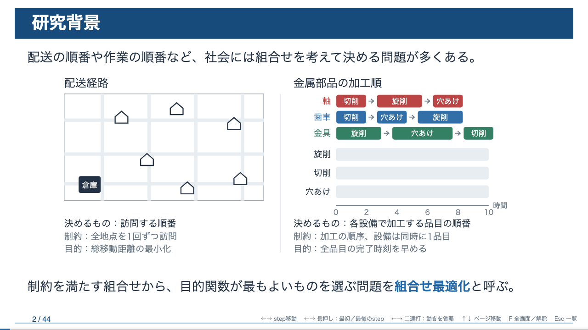
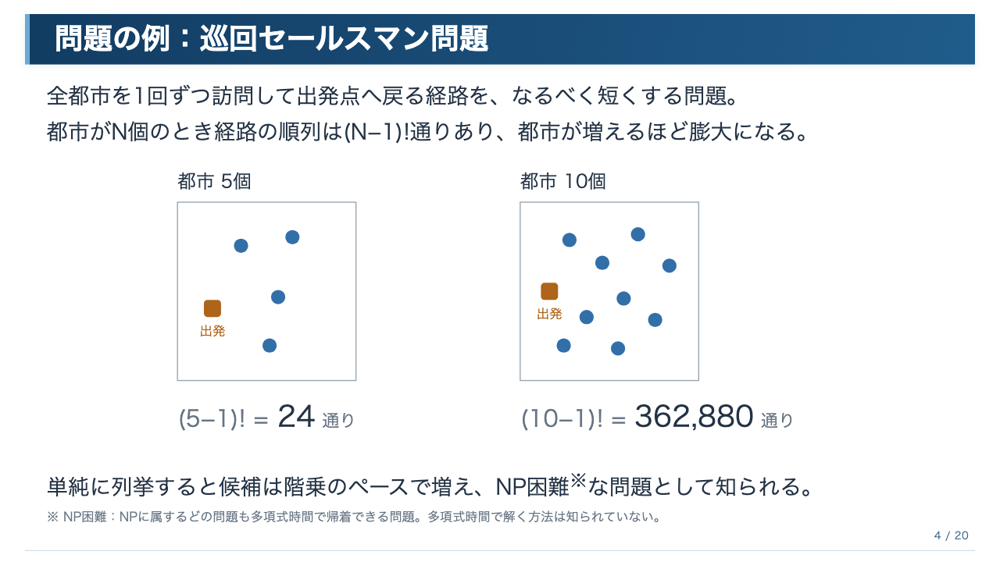
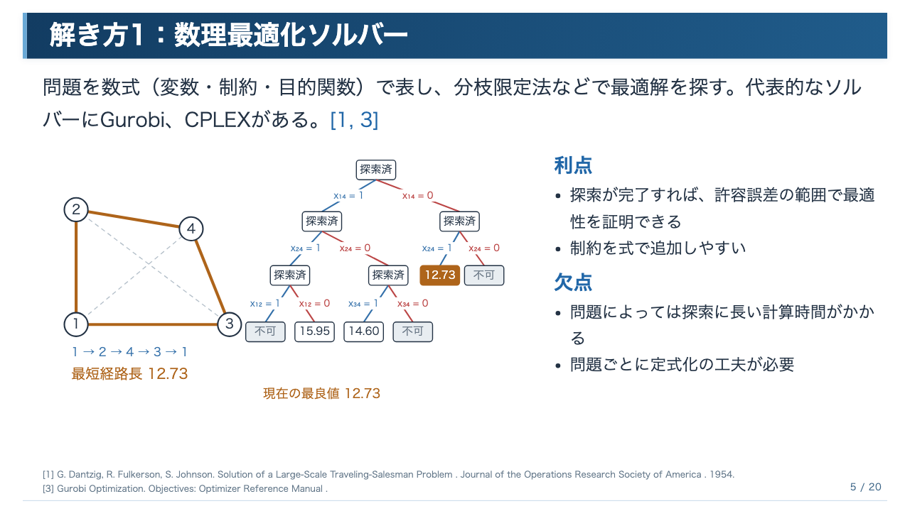

はじめに
発表スライドの本質は、内容とその伝え方を考えることです。配置や細かな大きさ・位置の調整は本質的な作業ではありません。そこで、内容は自分で考え、配置やデザインは AI にやってもらい、修正の指示を出しながらスライドを作っていきます。
AI のスライド生成ツールは、それっぽいものは作れますが、細部が間違っていたりと適当な印象があります。発表のように時間が限られ、伝えられる内容にも限りがある状況では、良いスライドにならないことが多いです。少なくとも全部を AI 任せにすると、自分の身にならず、時間内に伝えたいことが伝わらない発表になりやすいので、おすすめしません。
Claude for PowerPoint is not recommended for: … Replacing your judgment on design and narrative flow.
ツールの提供元自身も、「デザインや話の流れについての自分の判断を置き換えること」には勧めていません。
このページの対象読者
研究室の学生を想定しています。ゼミ発表・中間発表・学会発表などのスライドを、AI を使って速く、質を落とさずに作りたい人向けです。
このページで分かること
- AI にスライドを作らせる前に、何を自分で決めておくべきか
- 構成をチャットAIと推敲するときの聞き方
- AI でスライドを作る3つの方法と、その選び方
- 研究発表で使う、ステップごとに動くアニメーションの入れ方
- 修正指示の出し方と、確認基準を作って AI に修正を繰り返させる方法
全部を AI 任せにしたときによくある失敗
- 1枚に情報を詰め込みすぎて、持ち時間内に話しきれない。
- それっぽい図だけど、意味が分かりにくい or 内容とズレている。
- 教科書的な一般論の流れになり、自分の研究で何を主張したいのかが見えない。
- 自分で考えていないので、質疑で突っ込まれたときに答えられない。
どれも、内容を自分で決めてから AI に渡せばある程度防げますし、修正していけば自分が1から書くより、速く良いスライドが作れます。
目次
推奨する流れ
質の高いスライドを、なるべく AI を活用しながら作るための進め方です。
最初からスライドを作り出さない
発表資料でよくある失敗は、全体の見通しが甘いままスライドを作り出してしまうことです。
まずは文章で全体を構成し、文章の状態で内容を推敲します。説明する順番は良いか、話が飛んでいないか、といった点はスライドよりも文章のほうが確認しやすいです。たとえば次のように書いていきます。
1. 研究背景 組合せ最適化を導入する。 巡回セールスマン問題、スケジューリング問題の具体例を見せる。 2. 〇〇
文章で会話するほうが修正の負荷が低く、LLM にも扱いやすいです。また、文章で書いておけば、AI へのスライド作成の指示としてそのまま使えます。
推敲はブラウザの ChatGPT でやると利用枠の節約になる
この状態でブラウザの ChatGPT と会話して構成を修正していくと、利用枠の節約にもなります。ChatGPT ではチャットと Codex の利用枠が別だからです。
Claude はチャットと Claude Code で利用枠を共有しているので、この効果はありません。
推敲のコツ
構成の文章ができたら、チャットAIに貼って一緒に直します。聞き方の例です。
①前提を最初に書く
AI は前提を知らないと、一般論で直してきます。メモの先頭に、次のことを書いておきます。
- 対象読者（専門家か、学部生か、他分野の人か）
- 持ち時間（何分か、何枚くらいか）
- 伝えたいこと（結論を1〜2文で）
- 公開範囲（未発表の結果や氏名を含めてよいか）
②足りない情報を先に質問させる
直す前に、この構成を理解するのに足りない情報があれば質問して。
いきなり直させるより、質問に答えるほうが自分の考えも整理されます。
③聴衆になりきって読ませる
この分野を初めて学ぶ学部生として読んで、分からなくなる箇所と、その理由を挙げて。
④1枚1メッセージになっているか確認させる
各スライドで言いたいことを1文で書いて。1文で言えないスライドは、分けるか削る案を出して。
⑤話のつながりを確認させる
スライド同士のつながりを「前のスライドで〇〇と言ったので、次に△△を言う」の形で書き出して。つながらない箇所を指摘して。
⑥時間から逆算して削らせる
持ち時間は15分、1枚1分の想定。収まらないなら、結論に影響の小さいものから削る候補を挙げて。
⑦質疑を予想させる
この発表を聞いた先生がしそうな質問を5つ挙げて。スライドで先に答えておくべきものはどれか。
⑧図やアニメーションは「最初・途中・最後」で書く
「いい感じに動く」ではなく、初期状態で何を見せるか、ステップごとに何が変わるか、最後にどうなっているかを書きます。推敲の段階で AI にこの形へ書き直させると、そのままスライド作成の指示として使えます。
2章の例を見る⑨事実と出典を確認させる
この構成に含まれる事実・数値のうち、出典の確認が必要なものを列挙して。
最後は自分で原典を見て確認し、確認した日付と URL をメモに残します。
推敲用プロンプトのテンプレート
以下は研究発表スライドの構成案です。 対象読者： 持ち時間： 伝えたいこと： 公開範囲： まだ直さないでください。 1. 構成を理解するのに足りない情報があれば質問してください。 2. 初見の対象読者として、分からなくなる箇所とその理由を挙げてください。 3. 各スライドの言いたいことを1文で書き、1文で言えないスライドを指摘してください。 4. スライド同士のつながりが切れている箇所を指摘してください。 5. 持ち時間に収まらない場合、削る候補を挙げてください。 --- （ここに構成の文章）
通し例：研究背景スライドができるまで
実際に作った発表「機械学習を使った組み合わせ最適化」の、研究背景のスライド1枚を例に、1章の4ステップを順に見ていきます。この例は「② VS Code＋Quarto」（4章）で作っています。
ステップ1：メモを書く
最初に書いたメモです（下の左側）。言葉遣いや細かさは気にせず、思いついたままに書いています。
ステップ2：チャットAIと推敲する
チャットAIとやり取りして直したあとのメモと並べると、変化がよく分かります。色付きの行が推敲で加わった・具体的になった部分です。
1. 研究背景 社会にある実問題から 組合せ最適化の概念を導入。 html -- 左右で2つの問題例をだす。それぞれのアニメーションの下に 決めるもの、制約、目的 を書く。 左側 配送経路 四角の中に倉庫一つと家みたいなのを複数個用意、 倉庫から線が伸びて経路が作られるのを模擬。 右側 何か物の加工順 JSPかFSSPみたいな問題を例示。 作るもの3つで、作業機械3つ A,B,Cで 作るものはそれぞれ 作業をもち、色でわかる感じ。 横軸時間、縦軸機械 いい感じに順番に詰め込まれていく。 待ち時間的なことをやったりして単調にならないように。 --
対象読者：組合せ最適化やNCOを初めて学ぶ人。 伝えたいこと：従来の解法と比較しながら、学習済みモデルを繰り返し利用するNCOの考え方を紹介する。 公開範囲：公開済みのAttention Model・POMO・BOPOまで。独自の並列モデル・実験結果・氏名は含めない。 ## 1. 研究背景 社会にある実問題から、組合せ最適化を導入する。 HTML -- 左右に2つの問題例を出す。それぞれのアニメーションの下に「決めるもの・制約・目的」を書く。 左側：配送経路。四角の中に倉庫1つと家を複数置き、倉庫から線が伸びて経路が作られる。 右側：ものの加工順。ジョブショップを例にし、製品3つと機械A・B・Cを用意する。製品ごとの作業を色で区別し、横軸を時間、縦軸を機械にする。 初期状態では配送先と機械の時間軸だけを見せる。stepごとに経路を伸ばし、作業を時間軸へ配置する。作業の長さと機械の使用順は変化をつけ、同じ機械での重なりと製品内の工程順を守る。 最後には配送経路が倉庫へ戻り、全作業が配置される。 -- 続いてTSPを定義し、数理最適化とヒューリスティクス・局所探索を紹介する。
変わった点
- 先頭に「対象読者・伝えたいこと・公開範囲」が入った 推敲のコツ①
- 「JSPかFSSPみたいな」が「ジョブショップ」に決まった
- 「いい感じに詰め込まれていく」が、初期状態・各step・最後の状態に分けて書かれた 推敲のコツ⑧
- 「待ち時間的なことをやったりして」が、「作業の長さと機械の使用順に変化をつける」という具体的な指示になった
- 「同じ機械での重なりと製品内の工程順を守る」という、スケジュールとして正しいかどうかの条件が加わった
- 次のスライドへのつながり（TSP の定義へ進む）が書かれた 推敲のコツ⑤
ステップ3：メモをそのまま指示にする
推敲したメモを decks/nco-intro/memo.md に保存し、VS Code の AI に次のように頼みます。
decks/nco-intro/memo.md のスライド案で、新しいスライド「nco-intro」を作って。
左のタブで「メモの時点での書き方」と「AI が書いた qmd」を切り替えられます。右は、完成したスライドから研究背景の1枚を切り出したもので、実物のアニメーションをループ再生しています。
## 1. 研究背景 社会にある実問題から、組合せ最適化を導入する。 HTML -- 左右に2つの問題例を出す。それぞれのアニメーションの下に「決めるもの・制約・目的」を書く。 左側：配送経路。四角の中に倉庫1つと家を複数置き、倉庫から線が伸びて経路が作られる。 右側：ものの加工順。ジョブショップを例にし、製品3つと機械A・B・Cを用意する。製品ごとの作業を色で区別し、横軸を時間、縦軸を機械にする。 初期状態では配送先と機械の時間軸だけを見せる。stepごとに経路を伸ばし、作業を時間軸へ配置する。作業の長さと機械の使用順は変化をつけ、同じ機械での重なりと製品内の工程順を守る。 最後には配送経路が倉庫へ戻り、全作業が配置される。 --
decks/nco-intro/memo.md（研究背景の部分）
## 研究背景 {#background} 配送の順番や作業の順番など、社会には組合せを考えて決める問題が多くある。 ```{=html} <iframe src="../../html/social-problems/index.html" class="model-animation" title="配送経路とスケジューリング"></iframe> ``` 制約を満たす組合せから、目的関数が最もよいものを選ぶ問題を**組合せ最適化**と呼ぶ。[@dantzig1954; @jobshop]
decks/nco-intro/slides.qmd — アニメーション本体は html/social-problems/index.html に別ファイルとして作られ、iframe で読み込んでいます。
ステップ4：修正の指示を出して仕上げる
最初に生成されたものから、修正の指示を出して仕上げます。この発表で実際に出した指示の例と、研究背景スライドの初期の版・現在の版です。スライダーを左右に動かして比べられます。
図の配置・動きは維持して、表紙・章扉・見出し・表・引用の外観を青系で整えて。 ページ番号は右下で、罫線の上に独立させて。


修正のたびに AI がビルドと自動検査（はみ出し・重なりなど）を実行し、問題があれば自分で直してから報告してきます。この「確認基準を作って AI に修正を繰り返させる」やり方は 7章 で詳しく説明します。
前提と注意
ChatGPT か Claude のどちらかの月額サブスクリプションに入っていることを前提にしています。方式ごとに必要なものは次のとおりです。
| 方式 | 必要なもの |
|---|---|
| ① PowerPoint＋アドイン | ChatGPT か Claude の有料プラン、PowerPoint |
| ② VS Code＋AIコーディングエージェント | ChatGPT（Codex）か Claude（Claude Code）の有料プラン、VS Code、Quarto または Marp |
| ③ AI専用のスライド作成環境 | ChatGPT Work・ChatGPT Slides は ChatGPT の有料プラン（パソコン内のフォルダを直接編集するにはデスクトップアプリ版の ChatGPT）。Claude Artifacts の Slides テンプレートは claude.ai で使え、無料プランを含む全プランで使える |
ローカルLLM を使う場合
opencode は、ターミナルで動く AI コーディングエージェントです。クラウドのモデルだけでなく、自分のパソコンや研究室のサーバーで動かすローカルLLM（Ollama など）にも接続できます。
ローカルLLM なら、メモや qmd が外部に送られません。ただし、クラウドのモデルに比べると性能は落ちます。アニメーションのような複雑な HTML は一度でうまく作れないことが多いので、7章の確認基準とループをより丁寧に用意しておくと安定します。
3つの作り方
① PowerPoint内でAIを使う
PowerPoint のアドインから使う方法です。
- PowerPoint を開き、ホームの「アドイン」から「ChatGPT」か「Claude」と検索して追加する
- サブスクリプションに登録しているアカウントでログインすれば使える
Claude for PowerPoint is an add-in that brings Claude into PowerPoint. Build decks from scratch, edit specific slides without regenerating everything, convert bullets into diagrams and native charts, and iterate on feedback while preserving template compliance.
Claude for PowerPoint is generally available to Pro, Max, Team, and Enterprise plans.
訳：PowerPoint に Claude を組み込むアドイン。ゼロからの作成、全体を作り直さずに特定のスライドだけを編集、箇条書きを図やネイティブのグラフに変換、テンプレートに沿ったまま修正の反復ができる。Pro・Max・Team・Enterprise プランで利用できる。
ChatGPT for PowerPoint は PowerPoint 内のサイドバーで動き、スライドを編集できる状態のまま、作成・編集・仕上げができる。資料からの下書き作成、既存スライドの修正、聴き手に合わせた調整などに使える。Microsoft のマーケットプレイスで提供されており、ホーム → アドイン で「ChatGPT」を検索して追加し、利用できるアカウントでログインする。
（2026年10月時点の公式ヘルプの内容を要約）
主な用途は、既存スライドのレイアウト修正、スライドの追加、テキストの整理、テンプレートに合わせた生成です。AI が作ったものも、普通の PowerPoint の図形やテキストとして編集できます。
ChatGPT Work に PowerPoint 本体を操作させる
デスクトップアプリ版の ChatGPT Work は、許可した範囲でパソコンのファイルやデスクトップアプリを使えます。アドインからは難しい操作でも、人がマウスでやるのと同じ手順で PowerPoint を直接操作させられます。5章の HTML アドインの配置なども、この方法なら任せられる可能性があります（未検証）。
画面を見ながら操作するので、テキストを直接編集する方式に比べると時間と利用枠を多く使います。
② VS Code＋AIコーディングエージェント
VS Code や GitHub を使ったことがある人におすすめの方法です。Markdown からスライドを作るツール（Quarto / Marp）を使います。2章の通し例はこの方法で作っています。
- qmd・HTML・CSS などのテキストを編集するだけなので、AI の得意な文章の編集で完結する。
- 画像をやり取りしなくても編集しやすく、処理をスクリプトで回せるので、利用枠の消費を少なくできる。
- 細かい重なりや座標の微調整は多少苦手。ただ、画像での確認がほぼ必須な他の方式に比べれば効率は良い。重なりやはみ出しは、スクリプトで自動検査させれば AI が自分で直せる（7章）。
- HTML のアニメーション以外は、qmd ファイルを自分で直接直せばよいので簡単。
- テキストなので Git で差分を管理でき、前の版に戻すのも簡単。
Quarto で、HTML アニメーションを iframe で埋め込んだスライドを作るための基盤を、次のリポジトリで公開しています。1つのコマンドで、オフラインでも見られる単一の HTML と、PDF を出力できます。ビルドのたびに、はみ出しや重なりの自動検査も行います。
始め方
- VS Code をインストールする
- VS Code に Codex か Claude Code の拡張機能を入れ、サブスクリプションのアカウントでログインする
- Quarto と uv をインストールする
- リポジトリを clone して VS Code で開く
ターミナル
git clone https://github.com/murata-lab/quarto-html.git
- 初回だけ、ターミナルで準備のコマンドを実行する（AI に「README の準備をやって」と頼んでもよい）
ターミナル
uv sync uv run playwright install chromium
- 推敲したメモを AI に渡して、スライドを作らせる
AI への指示
このスライド案で、新しいスライド「my-talk」を作って。 対象読者は学部生、結論は……。 （ここに推敲したメモを貼る）
- AI が
output/my-talk.htmlとoutput/my-talk.pdfのリンクを返すので、開いて確認する
情報が足りない場合や説明の流れに問題がある場合は、作り始める前に AI が質問してきます（リポジトリ内の AI 向けルールにそう書いてあるため。7章を参照）。
qmd の書き方（最小限）
## 研究背景 配送の順番や作業の順番など、社会には組合せを考えて決める問題が多くある。 ```{=html} <iframe src="../../html/social-problems/index.html" title="配送経路とスケジューリング"></iframe> ``` 制約を満たす組合せから、目的関数が最もよいものを選ぶ問題を**組合せ最適化**と呼ぶ。[@dantzig1954]
#が章、##が1枚のスライド。- 箇条書きや太字は普通の Markdown と同じ。
[@キー]で引用すると、ページ下に書誌情報、最後に参考文献ページが自動で入る。- 基本は AI が書くので、覚える必要はない。文言を少し直す程度なら自分で qmd を直接編集するほうが早い。
Marp の PPTX 出力について
Marp で PPTX に書き出すと、通常は各スライドが画像になり、PowerPoint で文字を編集できません。編集できる PPTX を出力する機能は実験的で、見た目の再現性に制約があります。PowerPoint で後から直したい場合は注意してください。
③ AI専用のスライド作成環境
AI との対話からスライドを生成し、専用エディタで修正した後、PowerPoint へ書き出す方法です。VS Code などの環境を用意せず、自然言語での修正を中心に作れるのが利点です。
ChatGPT Work
パソコン内のフォルダを直接編集する機能は、デスクトップアプリ版の ChatGPT でのみ使えます。
- スライド用のフォルダを作る
- Work でプロジェクトを作成し、そのフォルダを指定する
- 作業結果はそのフォルダの中に保存される
- 使いたい PowerPoint のテンプレートがある場合は、作業フォルダに入れて「これを参照して」とプロンプトに書けば使ってくれる
デスクトップアプリの Work は、許可した範囲でローカルのファイルやデスクトップアプリを使える。プロジェクトかローカルのフォルダを開き、モードの切り替えで Work を選ぶ。デスクトップの Work のスレッドはそのパソコンに保存される。Work は対象のアカウントへ順次提供されている。
（2026年10月時点の公式ヘルプの内容を要約）
ChatGPT Slides
会話や資料からスライドを生成し、テキスト・図形・表などを専用のエディタで編集できます。完成したら PPTX に書き出して PowerPoint で開けます。
ChatGPT Pro・Business・Enterprise（Space を利用できるアカウント）で使える。Web 版から PowerPoint（.pptx）・PDF・Google スライドへ書き出せる。書き出したら、内容と書式を開いて確認するよう案内されている。
（2026年10月時点の公式ヘルプの内容を要約。2026年10月中旬から対象アカウントへ順次提供）
Claude Artifacts（Slides）
claude.ai で、会話や資料からスライドを作成し、そのまま編集・発表・PowerPoint への書き出しができます。
Presentations built from your notes, reports, or the work already in your chat. Edit any slide directly, present without leaving Claude, and export to PowerPoint or PDF.
The Docs, Slides, and Design templates are available on all plans and are on by default.
訳：メモやレポート、チャットでの作業内容から作るプレゼンテーション。どのスライドも直接編集でき、Claude から離れずに発表し、PowerPoint や PDF に書き出せる。Docs・Slides・Design のテンプレートは全プランで使え、最初から有効になっている。
動くHTMLアニメーションを入れる
ステップごとに動く HTML アニメーションをスライドに入れる場合、方式によって相性が違います。
| Quarto（②） | PowerPoint（①・③） | Marp（②） | |
|---|---|---|---|
| 埋め込み方法 | iframe で埋め込める | HTML を表示するアドインが必要 | 設定で HTML を許可する |
| スライド送りとの連動 | 連動させやすい | 実装と動作確認が必要 | 追加の実装が必要 |
| 注意 | — | 使うアドインによって、動かせる HTML やライブラリに制約がある | — |
研究発表でアニメーションを多用するなら、Quarto がいちばん扱いやすいです。
スライド送りの操作とアニメーションのステップ送りを一体にできるかが重要です。たとえば次のような操作です。
- → を押す：倉庫から1本目の経路が伸びる
- もう一度押す：次の家へ経路が伸びる
- ……
- 最後のステップのあとに押す：次のスライドへ進む
作り方の例
2章の通し例の研究背景スライドが、そのまま例になっています。メモの HTML -- … -- で囲んだ部分がアニメーションの指示で、初期状態・各ステップ・最後の状態（色付きの行）を書いておくと、AI がステップ送りに対応したアニメーションを作ります。
HTML -- 左右に2つの問題例を出す。それぞれのアニメーションの下に「決めるもの・制約・目的」を書く。 左側：配送経路。四角の中に倉庫1つと家を複数置き、倉庫から線が伸びて経路が作られる。 右側：ものの加工順。ジョブショップを例にし、製品3つと機械A・B・Cを用意する。製品ごとの作業を色で区別し、横軸を時間、縦軸を機械にする。 初期状態では配送先と機械の時間軸だけを見せる。stepごとに経路を伸ばし、作業を時間軸へ配置する。作業の長さと機械の使用順は変化をつけ、同じ機械での重なりと製品内の工程順を守る。 最後には配送経路が倉庫へ戻り、全作業が配置される。 --
初期状態 → step ごとの変化 → 最後の状態 の3つを書くのがコツ
## 研究背景 {#background} 配送の順番や作業の順番など、社会には組合せを考えて決める問題が多くある。 ```{=html} <iframe src="../../html/social-problems/index.html" class="model-animation" title="配送経路とスケジューリング"></iframe> ``` 制約を満たす組合せから、目的関数が最もよいものを選ぶ問題を**組合せ最適化**と呼ぶ。[@dantzig1954; @jobshop]
qmd 側は iframe を1行置くだけ。動きは html/social-problems/ の中に書かれる。
実際の発表では自動では進まず、→ キーやタップで1ステップずつ進みます。完成スライドで操作できます。
スライド送りとアニメーションを連動させる仕組み
Quarto 標準の Reveal.js でスライドを作る場合は、段階表示（fragment）が出たときのイベント（fragmentshown / fragmenthidden）を受け取り、iframe の中のアニメーションへステップを伝えます。
quarto-html リポジトリでは、Reveal.js の標準の操作を使わず、小さな専用プレイヤーがステップを管理しています。アニメーション側は、次の形で「ステップ数」と「そのステップでの描画」だけを書きます。
registerAnimation({
steps: 2,
render(step) {
// stepだけから描画を決める。0→2や2→0にも対応する。
}
});- 親のプレイヤーが ← / → でステップを進め、最後のステップを過ぎると次のページへ進む。
renderはステップ番号だけから描画を決めるので、戻る操作や途中のステップへの直接移動にも対応できる。- PDF には各ページの最後のステップの状態が出力される。
新しいアニメーションは uv run scripts/slides.py animation <図名> で雛形を作れます。
PowerPoint に HTML を埋め込む場合の注意
PowerPoint のスライドに HTML を表示するには、「コンテンツアドイン」を使います。
Content add-ins are surfaces that can be embedded directly into Excel or PowerPoint documents. Content add-ins give users access to interface controls that run code to modify documents or display data from a data source.
訳：コンテンツアドインは、Excel や PowerPoint の文書に直接埋め込める表示領域。コードを実行して文書を変更したり、データを表示したりする操作部品をユーザーに提供する。
- Microsoft 製の Web Viewer アドインは2024年に提供が終わっています。現在は、別の対応アドインを使うか、自分で Office アドインを作る必要があります。
- HTML 側をクリックして進めるだけなら比較的簡単です。PowerPoint の → キーとアニメーションの進行を一体にするには、実装と動作確認が必要です。
- Office アドインは Mac でも使えますが、コンテンツアドインの動作には Windows との違いがあります。発表に使うパソコンで事前に確認してください。
どれを選ぶか
| やりたいこと | おすすめ |
|---|---|
| 既存の PowerPoint 資料を AI で直したい | ① PowerPoint＋アドイン |
| 研究発表で数式やアニメーションを多く使いたい | ② VS Code＋Quarto |
| Markdown でシンプルなスライドを素早く作りたい | ② VS Code＋Marp |
| コードを触らず、AI と会話しながら完成させたい | ③ ChatGPT Work / Slides / Claude Artifacts |
①と②は組み合わせることもできます。たとえば②でスライドを作って PowerPoint に書き出し、最後に①のアドインで部分的に直す、という使い方です。
もう少し細かい比較
| 方式 | 既存PPTXの修正 | 新規作成 | 複雑な図・アニメーション | マウスでのレイアウト調整 | 配布先での再現性 |
|---|---|---|---|---|---|
| ① PowerPoint＋アドイン | ◎ | ○ | △ | ◎ | △（HTMLを埋め込んだ場合） |
| ② Quarto | △ | ◎ | ◎（HTML） | △ | ◎ |
| ② Marp | △ | ◎ | ○（HTML） | △ | ○ |
| ③ Work / Slides / Artifacts | △〜○ | ◎ | ○ | ○ | ○ |
機能の仕組みから見た目安です。
仕上げ：修正指示のコツ
最初に生成されたスライドが、そのまま使えることはまずありません。仕上げは「修正の指示を出す → 直ったか確認する」の繰り返しです。
この繰り返しを毎回人が目で見てやると、時間がかかるうえに見落としも出ます。そこでおすすめなのが、先に確認基準を作っておき、確認と修正の繰り返しを AI 自身に回させるやり方です。いわば、AI が自分で回せる仕組みを作る「ループエンジニアリング」です。
7-1. 考え方：人が見るのは「中身」だけにする
修正が必要な点は、大きく3種類に分かれます。
- 文字がはみ出している
- 要素が重なっている
- 文字が小さすぎる
- リンク切れ
- 図と本文が対応していない
- 余白のバランスが悪い
- 色が見分けにくい
- 説明が正しいか
- 話の流れが自然か
- 時間内に話せるか
1つ目と2つ目は、基準さえ書いておけば AI が自分で確認して直せます。人は3つ目に集中できます。
7-2. 確認基準を作る
機械的に判定できる基準の例
- すべてのページ・すべてのステップで、文字が枠からはみ出していない
- 本文同士、本文と図、本文とページ下の引用が重なっていない
- 本文の文字が〇pt（〇px）より小さくない
- ブラウザのエラーが出ていない
- 外部への通信がない（オフラインでも表示できる）
- スマホの画面幅でも崩れない
- PDF に全ページが出力されている
- qmd で引用した文献が、すべて参考文献ファイルに登録されている
AI が画像を見て判定する基準の例
- 本文で言っていることと、図で見せていることが一致している
- アニメーションの最後のステップで、図の要素が欠けたり重なったりしていない
- 色だけで区別している箇所が、白黒印刷でも区別できる
- 1枚の文字量が多すぎない（目安：〇行以内）
自分で判定する基準（AI には任せない）
- 説明・数値・引用が正しい（原典を確認した）
- 発表の流れが自然で、持ち時間に収まる
- 公開してよい範囲に収まっている
基準は最初から全部そろえる必要はありません。作りながら増やしていきます（7-4）。
7-3. AI にループを回させる
基準ができたら、「確認して、問題があれば直して、もう一度確認する」までを AI の仕事にします。
完了の条件を指示に書く
修正したらビルドして、自動検査がすべて通ることを確認して。 検査が失敗したら原因を直して、通るまで繰り返して。 最後に各ページの画像を見て、重なりや欠けがないか確認してから報告して。 確認できなかったことがあれば、報告に書いて。
検査そのものも AI に作らせる
機械的に判定できる基準は、AI に検査スクリプトとして実装させます。
全ページ・全ステップについて、ブラウザで表示して次を検査するスクリプトを作って。 - 文字が枠からはみ出していないか - 本文の要素同士の外接矩形が重なっていないか - コンソールにエラーが出ていないか 失敗したら、どのページのどのステップかを表示して終了コード1で終わるようにして。 ビルドのコマンドに組み込んで、ビルドのたびに実行されるようにして。
quarto-html リポジトリでは、uv run scripts/slides.py build <名前> を実行すると、ビルドのあとに次の検査が自動で走ります。
- 全ステップでのはみ出し、本文同士や引用との重なり
- 外部通信、ブラウザのエラー
- PC のキー操作、スマホサイズでのタップ操作
1つでも失敗するとビルドが失敗するので、AI は検査が通るまで自分で修正を繰り返します。2章の発表で実際に出力された検査結果です。
{
"pages": 20,
"layout_issues": [],
"reference_warnings": [
"page 14, step 16: overlap: text 4 / text 100%"
],
"browser_errors": [],
"external_requests": []
}layout_issues（はみ出し・重なり）、browser_errors、external_requests が空なので検査は通過です。reference_warnings の1件は、元の図の配置を維持するために例外として認めた重なりで、メモにその旨を書いた上で警告として記録しています（下の「ループがうまく回らないとき」を参照）。
各ページの最終状態の画像（.build/<名前>/01.png など）とスマホ表示の画像も保存されるので、AI はそれを見て、7-2 の「画像を見て判定する基準」も確認できます。


ループがうまく回らないとき
- 同じ修正を行ったり来たりする：基準同士が矛盾していることが多いです（「文字は〇pt以上」と「1枚に収める」が両立しない、など）。どちらを優先するかを書くか、スライドを分けることを許可します。
- 基準が曖昧で終わらない：「見やすく」のような基準は判定できません。「本文〇pt以上、1枚〇行以内」のように数値にします。
- 意図した重なりまで直そうとする：矢印が図形に重なっている、など意図した重なりは、例外として明記します。quarto-html の例では、元の図の配置を維持する指示を優先して、残る重なりを警告として記録するようにしています。
- いつまでも終わらない：「3回直しても通らなければ、止めて状況を報告して」と上限を決めておきます。
7-4. 基準を育てる
- 修正の指示を出す
- 同じ種類のミスが別のスライドでも起きたら、それを確認基準として書き足す
- 次からは AI が最初から気をつける。機械的に判定できるものは検査スクリプトにも追加させる
今回の修正内容を、今後も守るべきルールとして AGENTS.md に追記して。 機械的に検査できるものは、ビルド時の検査にも追加して。
こうしておくと、発表を重ねるほど最初の生成の質が上がり、修正の回数が減っていきます。
7-5. 基準を書いておく場所
確認基準や作り方のルールは、AI が毎回自動で読むファイルに書いておきます。
| ファイル | 書くこと |
|---|---|
AGENTS.md | どの発表にも共通するルール。作業の順番、使ってよいコマンド、完了の条件 |
スキル（.agents/skills/…/SKILL.md など） | スライド作成という作業専用の、より細かい手順と基準 |
発表ごとのメモ（decks/<名前>/memo.md） | その発表だけの基準。対象読者、公開範囲、デザインの指示、例外として認めた重なり、原典の確認記録 |
Codex は AGENTS.md を自動で読みます。Claude Code は CLAUDE.md を読むので、CLAUDE.md に @AGENTS.md と1行書いて読み込ませておくと、両方で同じルールを使えます。
AGENTS.md の例
quarto-html リポジトリの AGENTS.md は、次の数行だけです。細かい手順はスキルのファイルに分けています。
# Quartoスライド制作 このリポジトリのスライド制作では .agents/skills/quarto-slides/SKILL.md を読む。 探索は対象の decks/<名前>/memo.md → slides.qmd → 参照される html/ の順に絞る。 スクリプトは uv run。npmは使わない。出力HTML/PDFを直接編集しない。
スキルのファイルには、次のようなことを書いています（抜粋）。
- スライド案の対象読者・結論・説明順・必要なデータを確認する。 情報が不足する、流れが不自然、公開範囲が不明なら、質問し、回答前にスライドを作り始めない。 - 本文は最小限とし、発表者ノートを増やさない。 引用は [@key]、出典を reference.bib に登録する。原典で事実・実験条件を確認する。 - アニメーションの render は任意のstepへ直接移動・巻き戻しできる決定的な描画にする。 タイマーで勝手に進めない。 - 編集後は必ずビルドを実行し、HTMLとPDFの両方を出力する。失敗を修正して再実行する。 自動検査だけに頼らず各ページ画像とPDFを見て、文字・図・フッターの重なりや欠けを確認する。 - 完了報告はユーザーがすぐ見られるHTMLとPDFのリンクを短く示す。 実行できなかった検証は明記する。
最初の項目の「足りなければ質問してから作る」と、最後の項目の「確認できなかったことは報告に書く」が特に効きます。
デザインの基準を書いておく例
## デザインの基準 - 本文は〇px以上。1枚の本文は〇行以内。 - 色はメイン1色＋強調1色。色だけで区別せず、形やラベルも変える。 - 図の中の文字は本文より小さくしすぎない。 - 1枚で言いたいことは1つ。見出しにその結論を書く。 - 引用はページ下に小さく入れ、本文と重ねない。 - ページ番号は右下。
7-6. 修正指示の書き方
ループで直らない部分（中身やデザインの好み）は、自分で指示を出して直します。
どのスライドの、どの要素を、どう直すかを書く
| 悪い指示 | 良い指示 |
|---|---|
| いい感じにして | 3枚目の右の図を、左の本文と上端をそろえて |
| 見にくい | 研究背景の図の下にある「決めるもの・制約・目的」の文字を、本文と同じ大きさにして |
| アニメーションを直して | 右のスケジュールで、機械Bに2つの作業が同時に入っている。同じ機械で作業が重ならないようにして |
| デザインを変えて | 図の配置と動きは変えずに、表紙・章扉・見出し・表・引用の外観だけ青系にして |
| 文字を減らして | 4枚目の箇条書きを3項目以内にして。削るのは結論に関係の薄いものから |
理由も添える
「〇〇にして」だけより、「〇〇なので△△にして」と理由を書くほうが、AI が他の箇所にも同じ考え方を当てはめてくれます。
発表会場のプロジェクターは暗いので、背景の薄い色の上に置いている文字は濃くして。
変えてほしくないものを明示する
AI は頼んでいない部分まで「ついでに」直すことがあります。守ってほしいものは先に書きます。
図の配置・動きは維持して、外観だけ変えて。
2章のステップ4の修正も、この書き方で出しています（修正前⇄修正後を見る）。
スクショを貼って指す
ずれや重なりは、言葉で説明するよりスクショに丸をつけて貼るほうが早く伝わります。
中身の修正は、メモに戻ってから
話の順番や説明の内容を変えるときは、qmd を直接直させるのではなく、先にメモ（memo.md）を直してから「メモに合わせてスライドを更新して」と頼みます。メモとスライドがずれると、次に修正するときに AI が古いメモを元に戻してしまうことがあります。
一度に頼む量
- 同じ種類の修正（「全ページの見出しを〇〇に」など）はまとめて頼んでよい。
- 種類の違う修正は、3〜5個くらいまでにする。多すぎると漏れが出る。
- 頼んだことを全部やったか、報告で箇条書きにさせると漏れに気づける。
自分で直したほうが早いもの
- 誤字、言い回し、数値の1か所だけの修正 → qmd を直接直す
- 図の位置を数px動かす → AI に頼むと何往復もかかることがある。CSS の値を自分で直す
事実の確認は自分でやる
数値や引用は、AI が自信ありげに間違えることがあります。原典を見て確認し、確認した日付と URL をメモに残しておくと、次に AI がその部分を勝手に書き換えるのも防げます。
よく使う修正指示の例
# レイアウト 〇枚目の図を左右2列にして、左に図、右に箇条書きを置いて。 全ページで、見出しと本文の間隔をそろえて。 引用がページ下の線と重なっている。引用を線より上に出して。 # 文字量 〇枚目は情報が多い。言いたいことを1つに絞って、残りは次のページに分けて。 箇条書きを体言止めにそろえて。 # アニメーション 〇枚目のアニメーションを、最初は〇〇だけ見せて、→ で1つずつ△△が出るようにして。 戻る操作をしたときに、前のステップの状態に正しく戻るか確認して。 最後のステップで止めて、自動で動き続けないようにして。 # 強調 表の〇〇の数値を、2ステップ目でハイライトして。 # 全体 全ページを見て、本文と図の内容が合っていない箇所を挙げて。直す前に一覧を見せて。 対象読者を学部生として、説明なしで使っている専門用語を挙げて。
よくある質問
- 図やグラフはどう入れる？ 数式は？
- 全部 AI に頼めば解決します。データのファイルを渡して「このデータで〇〇のグラフを作って」、数式は「〇〇の式を入れて」と頼むだけです。
- 作ったスライドを共同研究者や先生に共有したい
- ②なら HTML と PDF が出力されるので、PDF を送るか、GitHub Pages で公開します（公開範囲に注意）。①・③は PowerPoint のファイルとして共有できます。
- 未発表のデータを AI に渡してもいい？
- 研究室や共同研究のルールに従ってください。外部に出せない場合は、3章のローカルLLM を使う方法があります。
まとめ
- 内容と伝え方は自分で考え、文章の段階で推敲する。
- 推敲した文章をそのまま指示にして、配置やデザインは AI に任せる。
- 確認基準を作って AI に確認と修正を繰り返させ、人は中身の判断に集中する。